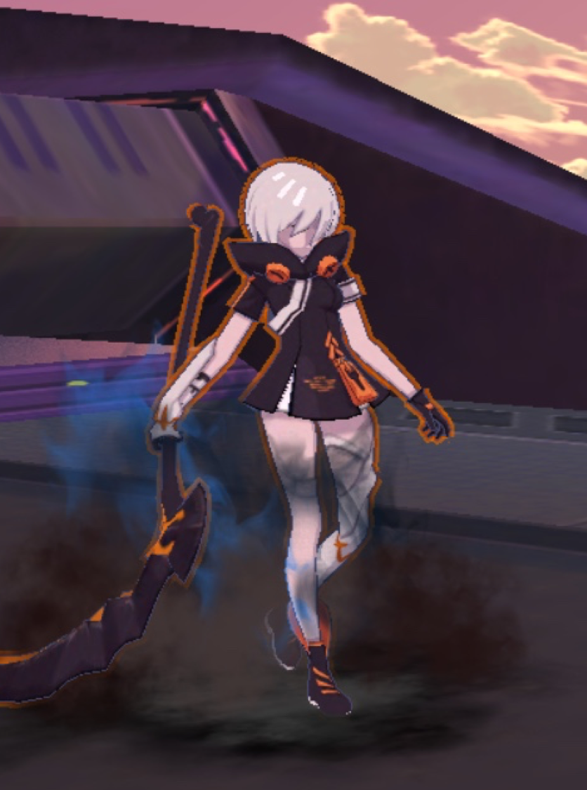
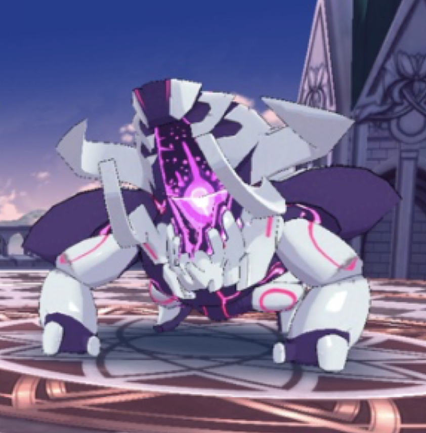

Enemy Types
In Honkai impact 3rd, each mission will have multitudes of enemies, each having ties to a force called Honkai which seeks to protect Earth from its inhabitants aka the Human race. In the game there are 3 factions. They are creature, mecha, and psychic. The game uses a rock-paper-scissor system for combat. Creature beats psycic, mecha beats creature, and psychic beats mecha. Valkryies will also have similar types as the enemies. Depending on what type a valkryie is will determine if they have an advantage, disadvantage, or remain equal to an enemy.
Honkai usually appears as honkai energy, quite similar to radiation. In the past years,
it has been able to create storms and plagues such as the Black Death. Now if humans are exposed
to this radiation too long, they will get infected and morph into zombies. Some include but are not
limited to:
|
 | |
Unlike the other two groups, mechas belong to an organzation known as Anti-Entropy. This group found
technology in a ruin from the last civilization era. This technology could greatly increase the effeincy of
machines using honkai energy. With this in mind, Anti-Entropy prefer using robots rather than humans.
Some of these mechs include but not limited to:
|
||
Just as Honkai energy transforms humans, the same can be done to animals. That result is honkai beasts.
No intelligience has been shown from honkai. However, when there is a burst of honkai energy that is focused on
one individual having the capacity of storing it, a Herscherr. As stated above, Honkai beasts are similar to that of
anti-bodies in a human. They are used when the Earth feels threatened. In this case, humans are the cause.
Some of these beasts include but not limited to:
|  |